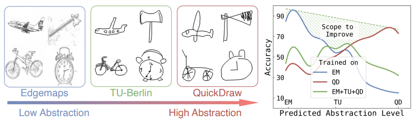

Tapas Kumar DuttaI am a Master's student at the University of Surrey, where I have been working on my thesis at the SketchX Lab under the supervision of Subhadeep Koley and Professor Yi-Zhe Song. I'm also a Data Scientist at National Health Service. Prior to this, I worked as a Deep Learning Engineer at 2Sigma School , specializing in Langchain, Retrieval-Augmented Generation, PDFs Parser.
Prior to that, I was involved in research in various institues such as SWLEOC, OpenCV, Bagci Lab and INRIA, STARS Team ds |

|
Research Interests
My research focuses on Deep Learning, particularly in Medical Imaging and Foundation Models. I have worked on AI-driven diagnosis tools, X-ray classification, and sketch understanding with foundation models.
|  |
A. Sain, PN. Chowdhury, S. Koley, AK. Bhunia, Y-Z. Song In Proc. European Conference on Computer Vision ( ECCV ), 2024 [PDF] / [BibTeX] / [arXiv] / [Project Page] / [Video] |